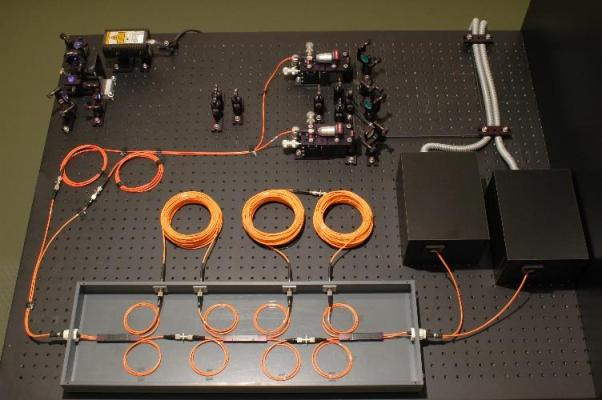
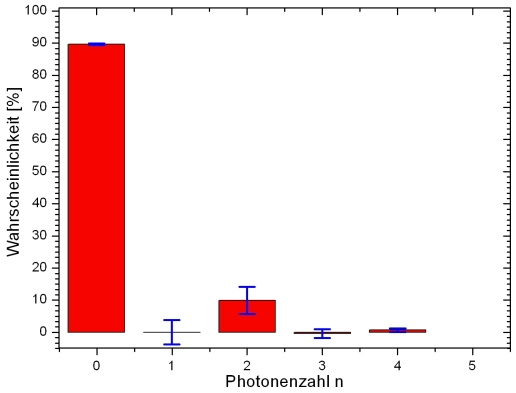
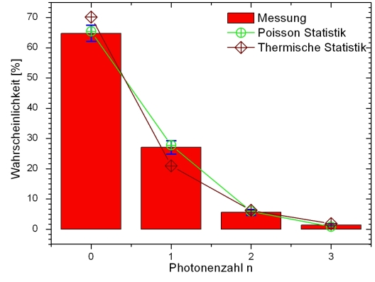

Photon Statistics Chapter 3:
Statistics of the photon pair source
In the last chapter it was shown how the photon statistics can be recorded with the TMD. In this chapter, the parametric fluorescence of the photon pair source is dealt with in more detail and compared to theoretical presumptions.
Measurement of photon statistics of the source
With the beam splitter network, the photon statistics of the photon pair source can be established. For the experiment, the second input of the beam splitter network is connected with the original trigger side (pic. 1). The efficiency of the network has been determined with the trigger in the last chapter and can now be used for conversion. Due to the conservation of energy and momentum of the parametric fluorescence, the photon statistics of the source can, in theory at least, not include single and three photon parts.

pic. 1: Experimental set-up to prove both photons of parametric fluorescence.
This assumption corresponds with the measured photon statistics (pic. 2). As was to be expected, the photon statistics show that only photon numbers n=0, n=2 and n=4 are sent from the source. Very rarely there is an event n=4. The measurement protocol with error analysis can be downloaded here: Measurement protocol. With higher photon numbers n=4 and n=6, the reverse calculation via the matrixes fails due to the high losses in the network.

pic. 2: Photon statistics of the photon pair source
Measurement of the photon statistics and comparison with the theory
Light can be subdivided into three types. The distinction is made e. g. with the correlation function g²(0) or with the photon statistics (table 1). With the formulae in the table the probability of finding photon number n is calculated. Factor <n> indicates the mean photon number. Where there is spontaneous parametric fluorescence, without the trigger detector thermic photon statistics may be expected. The measurement without the trigger detector and the comparison with the Poisson- and the thermic statistics (pic. 3) do, however, show a decided trend towards Poisson statistics. According to [Fox06], thermic statistics can only be measured if a source emits a single frequency. The process of parametric fluorescence emits photons at a band width of ca. 40nm. Due to the various frequency parts, the former thermic statistics turn into Poisson statistics because of the overlap.
Thermic light
e. g. light bulb
e. g. lLaserTable 1: Subdivision of light into three types

pic. 3: Comparison of the measured statistics with the theory
Original data from the experiment:
Statistics of the photon pair source: Statistics
Back to overview [klick]
Autoren: A. Strunz, P. Bronner, Oktober 2008
Translation: G. Murphy